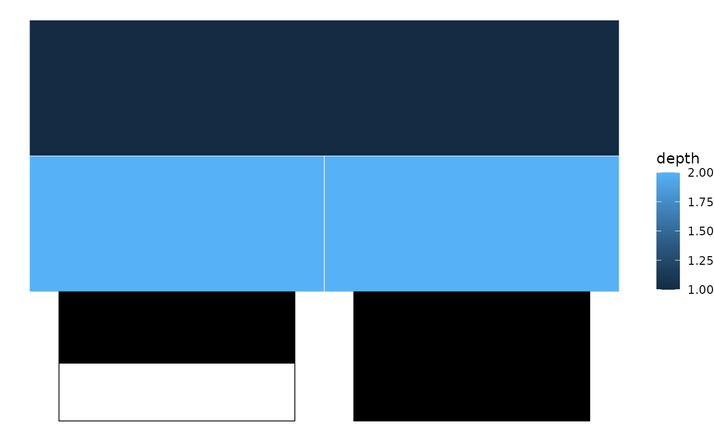

Overlays bar charts adjacent to leaf nodes, where each bar represents a quantitative variable from node attributes. Values are max-normalised per variable to the 0–1 range.
Usage
bars(
p,
sb,
variables,
y_offset = 0,
bar_height = 1,
box_colour = "black",
bar_colour = "black",
show_labels = FALSE,
show_values = FALSE,
label_size = 3,
value_size = 2.5,
...
)Arguments
- p
A ggplot object from
sunburst(),icicle(), orggtree().- sb
The
sunburst_dataobject used to createp.- variables
Character vector of numeric column names in
sb$rectsto display as bars.- y_offset
Vertical offset from the outermost ring. Default
0.- bar_height
Height of each bar band. Default
1.- box_colour
Outline colour for the outer box. Default
"black".- bar_colour
Fill colour for the inner value bar. Default
"black".- show_labels
Whether to display variable names. Default
FALSE.- show_values
Whether to display numeric values inside bars. Default
FALSE.- label_size
Text size for variable labels. Default
3.- value_size
Text size for value labels. Default
2.5.- ...
Passed to the outer
geom_rect().
See also
tile() for heatmap-style annotations,
highlight_nodes() for node emphasis.
Examples
df <- data.frame(
parent = c(NA, "root", "root"),
child = c("root", "A", "B"),
score = c(NA, 0.5, 0.9)
)
sb <- sunburst_data(df)
p <- icicle(sb, fill = "depth")
bars(p, sb, variables = "score")
